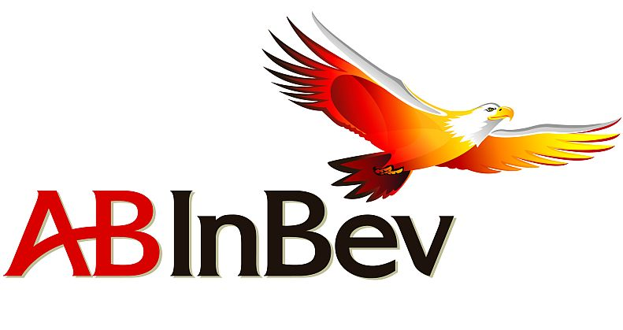
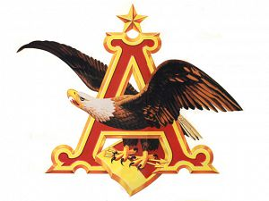
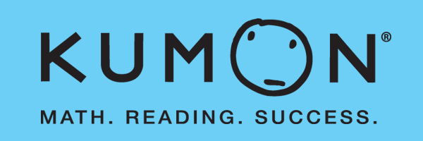

 IT Specialist, Application Services - Anheuser-Busch InBev
(June 2014 - Present)
Supporting applications for consumer products logistics, commercial sales & marketing, and business financial reporting.
24/7 support of business-critical RoadNet Transportation Suite and Electronic Commerce applications used by A-B's Wholesaler Operations Division (WOD) and independent wholesalers.
Handling interaction and incident management, end-user support, technical troubleshooting and infrastructure maintenance and upgrade planning.
(August 2013 – December 2013)
Worked with two other interns to develop a .NET application in Visual C# that returns a latitude/longitude pair for a given street address and, consequently, stores those results into Concordia Seminary’s five databases that track locations of users, students, faculty, churches, and missionaries.
 IT Application Support Intern - Anheuser-Busch
(June 2013 – August 2013)
Successfully upgraded a critical, geocoding application from MapMarker API version 14 to 26. Decompiled the executable and revised the source code, written in Visual C#, to use the most recent API. Fixed broken links, resolved technical issues, and deployed the application into production, resulting in improved accuracy, greater efficiency, and enhanced support for Business Customers.
 Academic Tutor - Kumon
(May 2010 – August 2011)
Assisted students with diverse learning needs and cultural backgrounds, effectively communicating Math and Reading strategies and challenging students to reach their highest potential.
 Follow me on
Follow me on  Email me here
Email me here